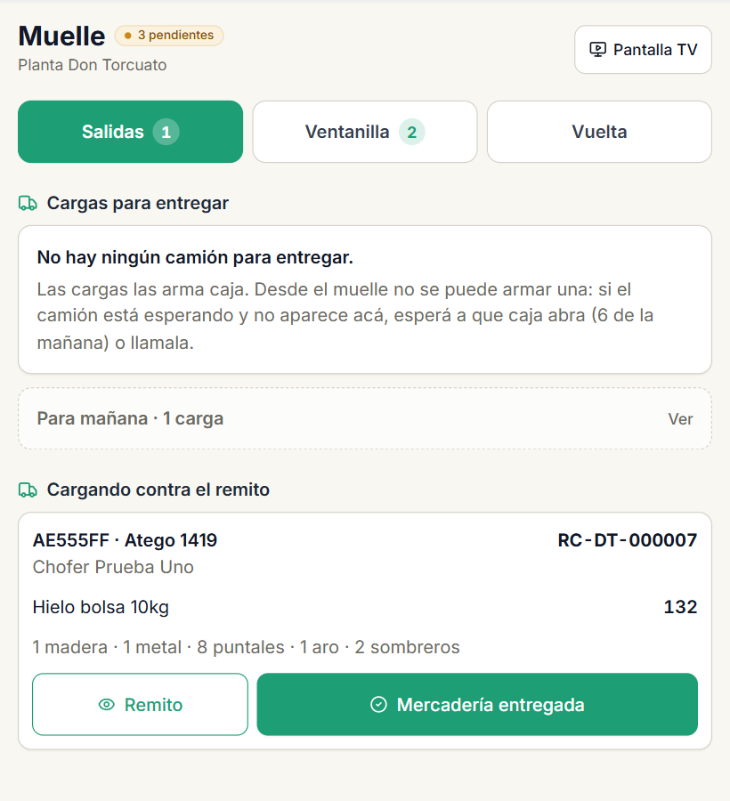
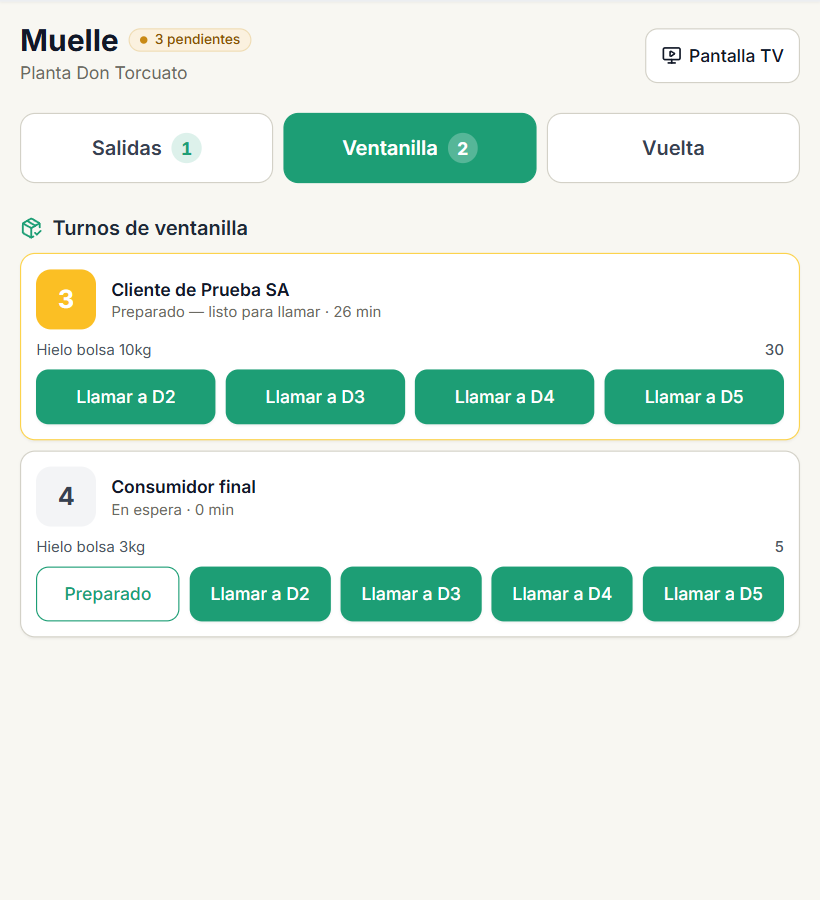
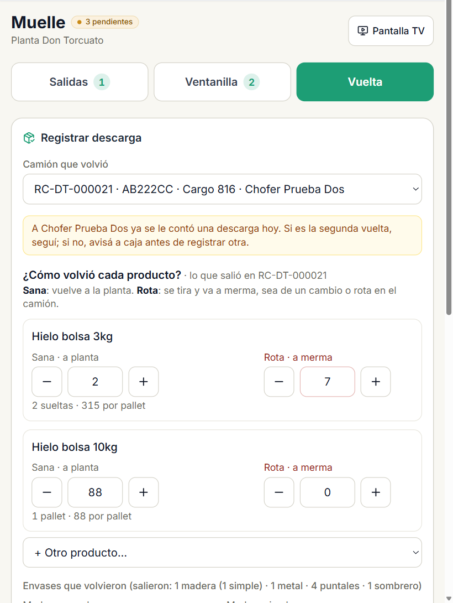
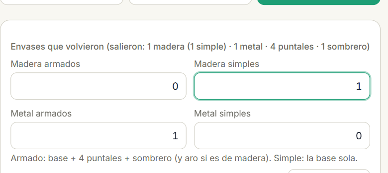
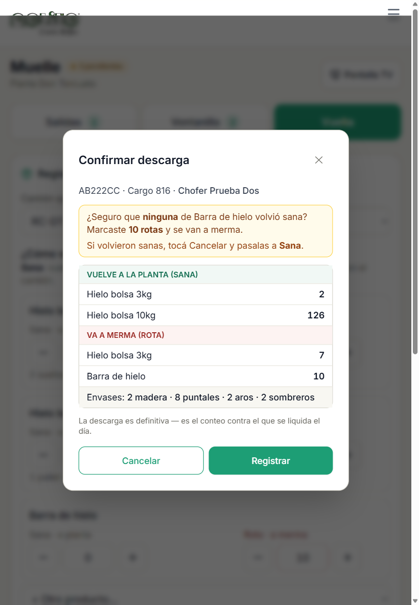

Entregar los camiones, llamar la ventanilla y contar la vuelta: qué es sano, qué es roto y qué pasa después con cada bolsa.
Versión del 26 de septiembre de 2026 · corresponde a la app en producción desde esa fecha. Para el personal del muelle, en la tablet.
Contenido
Tu trabajo en tres pestañas
Salidas: entregar el camión
Ventanilla: llamar el turno a una dársena
La vuelta: contar lo que volvió
¿Sana o rota? Ejemplos
Qué pasa después con cada bolsa
Me equivoqué: corregir un conteo
Si pasa esto, hacé esto
La regla del muelle. Vos contás lo que tenés adelante: cuántas bolsas volvieron sanas y cuántas volvieron rotas. Nada más. La app no te muestra cuántas "tendrían que" volver, a propósito: así el conteo es honesto y es el control de todo el circuito.
1 · Tu trabajo en tres pestañas
Arriba de la pantalla del muelle hay tres botones. El número al lado es lo que tenés pendiente.
Pestaña
Qué hacés ahí
Salidas
Cargás el camión contra la carga que armó caja, contás los envases y lo entregás. Ahí nace el remito.
Ventanilla
Los clientes que compraron en la ventanilla: preparás el pedido y los llamás a una dársena.
Vuelta
El camión volvió: contás cómo volvió cada producto (sano o roto) y los envases.
Pantalla TV abre la pantalla grande del muelle con las cinco dársenas.
2 · Salidas: entregar el camión

Salidas: las cargas que armó caja y el camión que se está cargando.
Cargas para entregar: son las que armó caja. Tocá la del camión que tenés en la dársena.
Cargá la mercadería y contá los envases: pallets de madera y de metal, armados (con puntales y sombrero, y aro si es de madera) o simples (la base sola), y los racks.
Confirmá: ahí nace el remito con su número. Queda en Cargando contra el remito.
Cuando está todo arriba, tocá Mercadería entregada.
Desde el muelle no se arma una carga. Si el camión espera y no aparece en la lista, esperá a que abra caja (6 de la mañana) o llamala.
3 · Ventanilla: llamar el turno a una dársena

Ventanilla: los turnos, con lo que lleva cada cliente.
Prepará lo que dice el turno y marcalo Preparado.
Tocá Llamar a D… en la dársena donde lo vas a atender. La pantalla grande lo llama.
La dársena 1 es solo para camiones. De la 2 a la 5 entra camión o cliente, la que esté libre. La app no te deja llamar un cliente a una boca con camión.
4 · La vuelta: contar lo que volvió

Una tarjeta por producto del remito: cuántas volvieron sanas y cuántas rotas.
En Vuelta elegí el camión que volvió (dice el remito, la patente y el chofer).
En cada producto anotá:
Sana · a planta: las bolsas que volvieron bien y se pueden vender. Los botones + y − mueven un pallet entero; también podés escribir el número.
Rota · a merma: las que se tiran. Todas: las que el chofer cambió a un cliente y las que se rompieron en el camión.
Si volvió algo que no salió en ese remito, agregalo con + Otro producto….
Contá los envases (página siguiente).
Tocá Revisar y registrar descarga, revisá y Registrar.
"A este chofer ya se le contó una descarga hoy". Si es su segunda vuelta, seguí. Si no, no registres otra: avisá a caja.
4 · La vuelta (sigue): envases y confirmación

Arriba dice lo que salió. Contá lo que volvió igual que en la carga: armados y simples por tipo.
Un pallet vuelve como salió: si salió armado, vuelve armado. Los puntales, aros y sombreros la app los calcula sola de los armados. Si volvió algo suelto, sin su pallet, usá Corregir sueltos.

La confirmación: lo que vuelve a la planta, lo que va a merma, y un aviso cuando algo no cierra.
Antes de registrar, la app te muestra en dos bloques:
Vuelve a la planta (sana)
Va a merma (rota)
"¿Seguro que ninguna volvió sana?" Aparece cuando marcaste varias rotas de un producto y ninguna sana. Casi siempre es mercadería sana anotada en el casillero equivocado. Si volvieron sanas, tocá Cancelar y pasalas a Sana. Si de verdad volvieron todas rotas, registrá.
Al registrar sale el código de la descarga (DC-…), grande. Ese código va escrito en el sobre si el chofer deja plata.
5 · ¿Sana o rota? Ejemplos
La pregunta es una sola: ¿esta bolsa se puede volver a vender?
Qué volvió
Dónde va
Bolsa que el chofer no vendió y está bien
Sana
Bolsa rota que el chofer le cambió a un cliente
Rota
Bolsa que se rompió o se pinchó en el camión
Rota
Bolsa derretida o que no se puede vender
Rota
Pack de agua, bidón o anticorrosivo que volvió cerrado y sano
Sana. Nunca rota si se puede vender: todo lo que va a rota sale del stock.
Bidón o pack roto, abierto o perdiendo
Rota
Si dudás, es sana. Una bolsa sana anotada como rota es mercadería que se pierde del stock. Una rota anotada como sana la ve el encargado cuando la va a vender.
6 · Qué pasa después con cada bolsa
Para que sepas por qué importa contar bien. Esto lo hace la app sola: vos no tenés que hacer nada.
Sana → plantaVuelve al stock de la planta y se vende de nuevo.
Rota → mermaSale del stock a merma (depósito 99). No se le cobra al chofer: sea de un cambio o rota en el camión.
No volvió → diferencia del choferLo que no volvió ni sano ni roto es faltante: va a la diferencia del chofer (depósito 98) y lo ve caja al liquidarlo.
Ejemplo. Salen 100 bolsas. El chofer vende 90 y hace 5 cambios. Vuelve con 2 sanas y 7 rotas (5 de los cambios y 2 que se rompieron en el camión). Vos anotás 2 en Sana y 7 en Rota, y listo. Después la app calcula: 2 a la planta, 7 a merma, y 1 bolsa que no volvió ni sana ni rota va a la diferencia del chofer.
Vos no ves el faltante. Ni cuántas tenían que volver ni cuántas faltan: eso lo ve caja. Si vieras el número, el conteo dejaría de ser un control.
7 · Me equivoqué: corregir un conteo
En Vuelta, abajo, en Descargas de hoy, buscá la descarga que contaste mal.
Tocá Corregir este conteo. Se abre el conteo con tus números.
Corregí lo que estaba mal, escribí el motivo y guardá.
El conteo original no se borra: queda la corrección en su lugar, con tu nombre y el motivo, y la oficina recibe el aviso para ajustar el stock.
8 · Si pasa esto, hacé esto
Si pasa esto…
…hacé esto
El camión llegó y no hay carga para entregar
Esperá a que caja la arme (abre a las 6) o llamala. Desde el muelle no se arma.
El camión que volvió no aparece en la lista
Buscalo por el depósito del chofer al final de la lista, o avisá a caja.
"Ya se le contó una descarga hoy"
Si es la segunda vuelta, seguí. Si no, avisá a caja antes de registrar otra.
"¿Seguro que ninguna volvió sana?"
Revisá. Si volvieron sanas, Cancelar y pasalas a Sana.
Una bolsa se rompió en el camión
Va en Rota, igual que las de los cambios. No es faltante del chofer.
Volvió un producto que no salió en ese remito
Agregalo con + Otro producto….
Volvió un pallet sin sus puntales, o puntales sueltos
En envases, Corregir sueltos y cargalos a mano.
Me equivoqué en el conteo
Corregir este conteo con el motivo. Nunca registres otra descarga para "arreglarla".
No hay señal
Registrá igual: se guarda y sube sola cuando vuelve la señal. El código DC aparece recién entonces: no escribas un número inventado en el sobre.
Rolito · app de gestión · manual del muelle · 26/09/2026. Las pantallas pueden cambiar de detalle; la regla es siempre la misma: vos contás sanas y rotas, la app hace el resto.